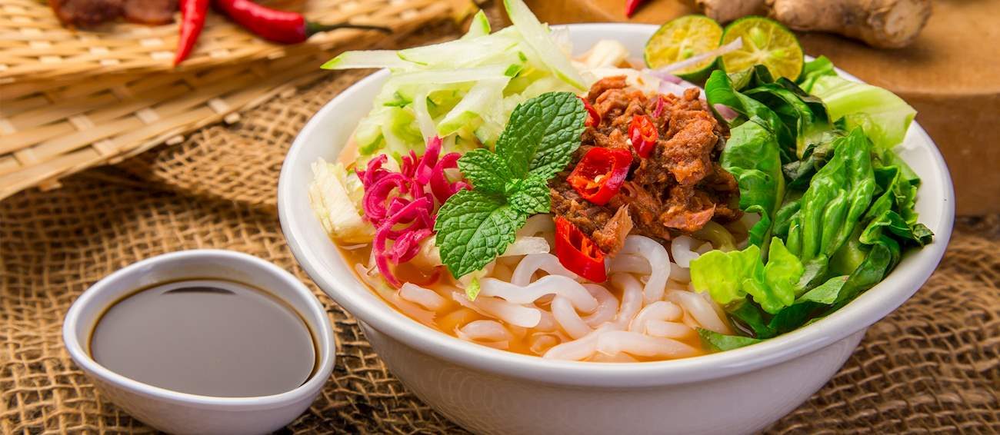

Pening Laksa

How to Make Pening Laksa
Pening Laksa, where mystery fish and store-bought sambal team up to create a bowl of soup so pening it'll make your taste buds question their life choices!
You'll find a glorious ingredient list and foolproof instructions below, but first, let's cover the bare essentials to make this epic fail of a dish:
Mystery Components
- 1 packet of “instant laksa mix” (because we're all about that convenience)
- 2 cups of “mystery fish” (preferably something that smells fishy)
- 1 jar of “store-bought sambal” (the spicier, the better!)
- A handful of “whatever herbs are still fresh” (bonus points if they're wilted)
- 3 cups of “tap water” (it's basically the same as broth, right?)
- A squeeze of “lemon juice from that plastic bottle”
Epic Steps
- Boil It All Together: In a pot, combine the instant laksa mix and mystery fish. Simmer until the fish looks vaguely edible.
- Add the Mystery Ingredients: Toss in the sambal and herbs. Stir until it looks like a colorful mess.
- Water Works: Pour in the tap water and wonder why it doesn’t taste like Penang.
- Final Touch: Squeeze that plastic lemon juice and pretend you’re in a fancy restaurant.
- Serve with Confidence: Ladle into a bowl and top with “a sprinkle of guilt” because you know this isn’t real laksa.